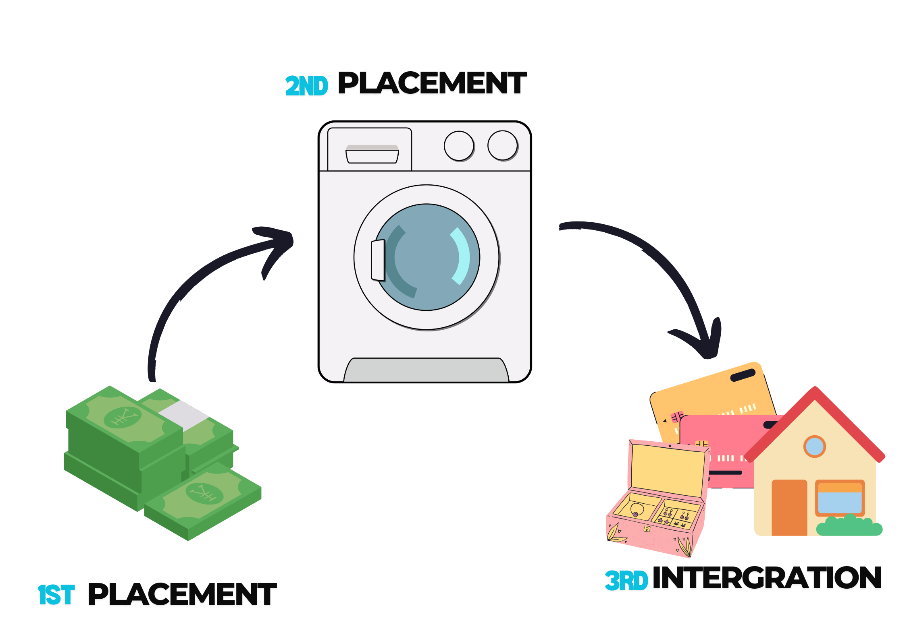

AMLA - Anti-Money Laundering Act
Money laundering is an unlawful activity that makes the dirty money coming from a legitimate source.
I recommened watching Ozark a netflix series for a better understanding of the AMLA. The series depicts how money laundering works in a practical sense.
Stages of money Laundering:
- Placement: The initial stage where the illegal funds are introduced into the financial system.
- Layering: The process of concealing the source of the money through a series of transactions.
- Integration: The final stage where the laundered money is reintroduced into the economy, making it appear legitimate.
ILLUSTRATION:
Imagine you're the one doing the act.
- Placement: In this stage you put your dirty money in an legitimate business. That's why it's called placement.
- Layering: In this stage you mix your dirty money with the good ones(income of the business) and then put it in the bank.
That's why it's called layering. Covering your lie with the truth. - Integration: The final stage where you can take out your clean money in the bank and buy the things you want.
Making it appear it's hard earned money.
Covered Institutions and Their Obligations:
The following institutions are covered under the law:
- Banks and Financial Institutions
- Foreign Exchange Dealers
- Pawnshops
- Money Changers
- Insurance Companies
- Jewelry dealers in precious metals and stones
For transactions more than 1 million pesos.
metals=Golds, silver, platinum, palladium etc.
stones=Diamonds, rubies, emeralds, sapphires etc.
Remittance and transfer companies and other similar entities
and all other persons and their subsidiaries are also covered
under the law. and affiliates supervised or regulated by the BSP
Pre-Need Companies and all other persons supervised or regulated
by the Insurance Commission
- Persons who provide any of the following services:
- Managing of client money, securities, and other assets.
- management of bank, savings, or securities accounts.
- Organization of contributions for the creation, operation, or management of companies.
- Casinos, Including ship-based casinos, with respect to their casino cash transactions related to the gaming operation.
the term "covered persons" excludes lawyers and accountants acting as independent legal professionals
in relation to information concerning their clients, or where disclosure of information would
compromise client confidences or the attorney-client relationship.
Lawyers and accountants are covered by AMLA if they provide the following services:
- management of client money, securities or other assets.
- Management of bank, savings or securities accounts.
- Organization of contributions for the creation, operation or management of companies.
- Creation, operation or management of legal persons or arrangements, and buying and selling business entities.
If they provide the above services, they are required to:
- Register with the AMLC
- Submit deeds of undertaking to comply with the provisions of the AMLA, and attend regular AML/CTF trainings.
- Report covered and suspicious transactions to the AMLC.
A covered transaction refers to:
- Any transaction in cash or other equivalent monetary instrument involving a total amount of more than P500,000.00 within one (1) day.
- A transaction with or involving jewelry dealers of precious metals and stones exceeding P1,000,000.00.
- A casino cash transaction involving a total amount of more than P5,000,000.00.
The land registration authority, and all its registries of deeds are required to submit to the AMLC, reports of all real estate transactions involving an amount in excess of P500,000.00 within 15 days from the date of the transaction, in a form to be prescribed by the AMLC.
Suspicious Transactions and Suspicious Circumstances:
- There is no underlying legal or trade obligation, purpose or economic justification.
- Client is not properly identified.
- The amount involved is not commensurate with the business or financial capacity of the client.
- Taking into account all known Circumstances, it may be perceived that the client's transaction is structured in order to avoid being the subject of reporting requirements under AMLA.
Example: A client who is a businessman, deposits P500,000.00 in cash in his account on a Monday, and then withdraws the same amount on a Tuesday.
Example: A client who deposits same amount of cash in his accounts in different banks on the same day.
- Any circumstances relating to the transaction which is observed to deviate from profile of the client/or the client's past transactions with the covered person.
- The transaction is in any way related to money laundering/terrorism financing or related unlawful activity that is about to be committed, is being or has been committed.
- Any transaction that is similar, analogous or identical to any of the foregoing, such as the relevant transactions in related and materially linked accounts.
Example:A client who deposits a huge amount of money but his previous deposits were significantly smaller.
Under the law, covered Institutions have the following obligations:
- Establish and record a true identity of it's clients, based on official documents;
- Maintain a systmen of verifying the true identity of their clients; and
- In case of corporate clients, require a system to verify its legal existence and organizational structure, sas well as the authority and identification of persons purporting to act on their behalf.
- Record keeping - All records of all transactions of the covered institutions shall be maintained and safely stored within 5 years from the dates of transactions.
If closed accounts, the records on customers identification, account files and business correspondents shall be preserved for atleast 5 years from the dates when they were closed. - Reporting of covered and suspicious transactions to the AMLC - as a general rule covered institutions shall report to the AMLC within 5 working days from the date of it's occurrence Unless the AMLC extends the time of which shall not exceed 15 working days.
Note:Use of Anonymous accounts and accounts under fictitious names are absolutely Prohibited.
fictitious names are names that are not the true name of the account holder.
How Money Laundering is Committed.
Money laundering is committed by any person who, knowing that any monetary instrument or property represents, involves, or relates to any unlawful activity:
- Transacts said monetary instrument or property.
- Converts, transfer, dispose of, move, acquires, or uses said monetary instrument or property.
Money laundering is also committed by the covered persons who, knowing that a covered or suspicious transactions are required to be reported to the AMLC,butfails to do so.
Unlawful Activity (Predicate Crime)
Unlawful activity refers to any act or omission that is punishable by law, and includes:
- Kidnapping for ransom.
- Plunder.
- Robbery and Extortion.
- Jueteng and Masiao.
- Piracy on the high seas.
- Qualified Theft
- Swindling.
- Smuggling.
- Hijacking.
- Financing of terrorism.
- Bribery.
- Frauds and illegal exactions and transactions.
- Forgeries and Counterfeiting.
33 yan lahat. Katamad ilagay lahat kayo nalang bahala mag search HAHAHA
*tinamad.
Freeze order - Issued by the court of appeals to prevent the monetary instruments or properties of being moved.
Shall be effective immediately for a period of which not exceeding 6 months.
If no case is filed in that time the case is deemed facto ipso lifted meaning it is no longer frozen and the monetary instruments or properties may be moved.